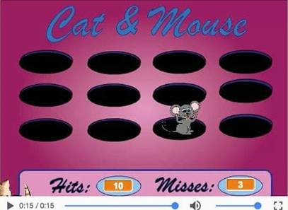

Scratch
This is a little snippt of a program i made in my Exploration of Media Tools. This is a game featuring a fat, hungry cat, catching amouse. All video produced using Scratch, a visual programming language.


This is a little snippt of a program i made in my Exploration of Media Tools. This is a game featuring a fat, hungry cat, catching amouse. All video produced using Scratch, a visual programming language.